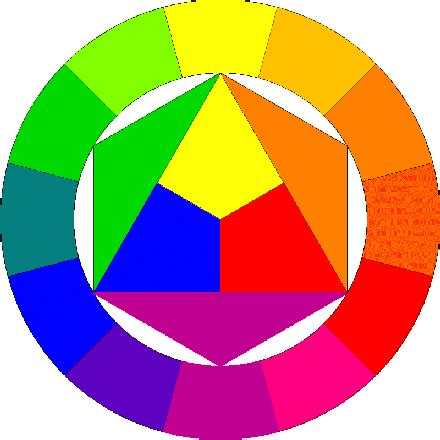

Quem trabalha com cores, como designers gráficos, artistas
ou arquitetos de interiores, sabe como uma boa combinação gera
efeitos benéficos ao design e influencia o usuário a tomar
ações. Diante disso, é imprescindível que tenha ciência de diversas
técnicas a fim de aplicar nos mais variados cenários.
À vista dessa lógica, os programadores web frontend devem
ter profundo conhecimento sobre as cores, uma vez que excercem a
função de criação da visualização de uma página web na
internet.

Cìrculo cromático
A importância das cores
Na natureza, as cores estão presentes e podem ser captadas pelos
nossos olhos, assim como os de muitos outros animais. Nesse
contexto, englobam o sentido da visão, que é o mais importante
dentre os outros sentidos cognitivos - audição, tato, olfato,
paladar - porque é o qual a conciência dá maior notoriedade na
percepção do mundo.
Segundo Eva Heller em seu livro "A Psicologia das cores: Como as cores afetam a emoção e a
razão", uma pesquisa com duas mil pessoas de diversas áreas
profissionais na Alemanha constatou que as cores estão envolvidas
com nosso sentimentos a partir de nossa vivência desde a juventude,
isto é, essa relação é profundamente implementada no pensamento.
Assim, é notório que a visão não só garante a visualização do mundo,
mas também sua interpretação ao transcender o aspecto físico e
manipular a mente.
Além disso, quando se trata de sobrevivência no meio ambiente, as
cores ajudam a identificar fatores que podem ser prejudiciais ou
benéficos, como a composição de um material e a condição de um
alimento, e auxiliam na camuflagem, atração de cônjuges e expanto de
predadores de diversos animais, a exemplo a Borboleta-folha, que se
parece com uma folha e se esconde em galhos.
Borboleta-folha
Como as cores podem ser utilizadas no design?
Assim com na natureza, as cores podem ser utilizadas para
influenciar o comportamento dos usuários ao serem manipuladas
adequadamente em um design. Ao fazer uma combinação
satisfatória de acordes cromáticos - cores frequentemente
relacionadas a efeitos, como o vermelho e o amarelo à fome -,
pode-se fazer o usuário comprar um produto impulsivamente, sem nem
ao menos checar seu preço corretamente ou se lhe é realmente útil.